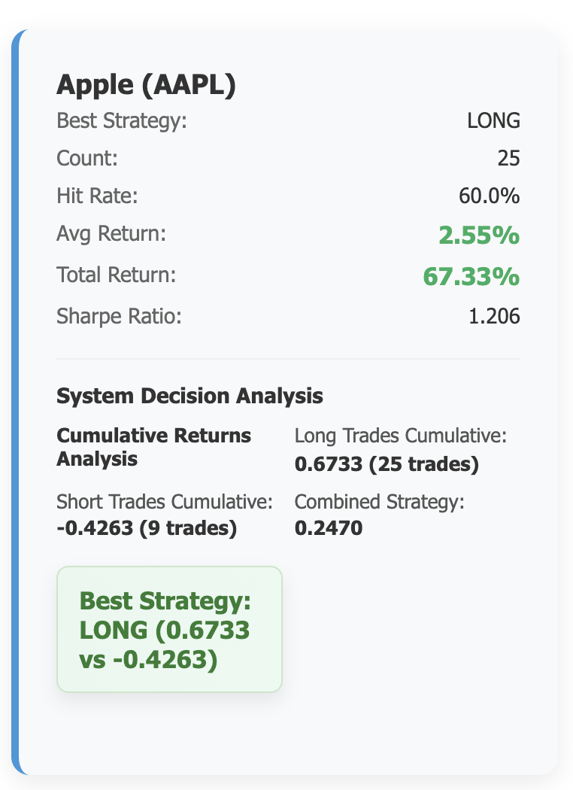
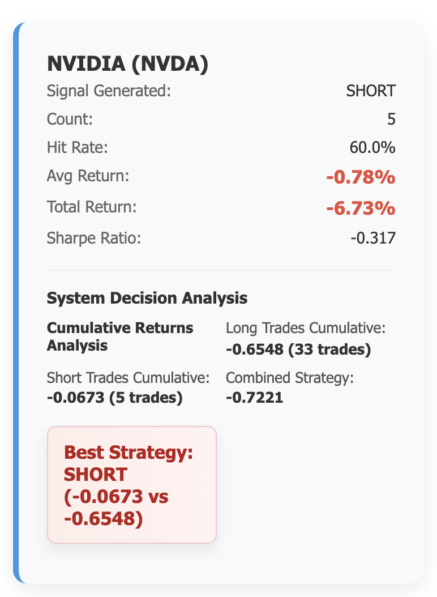
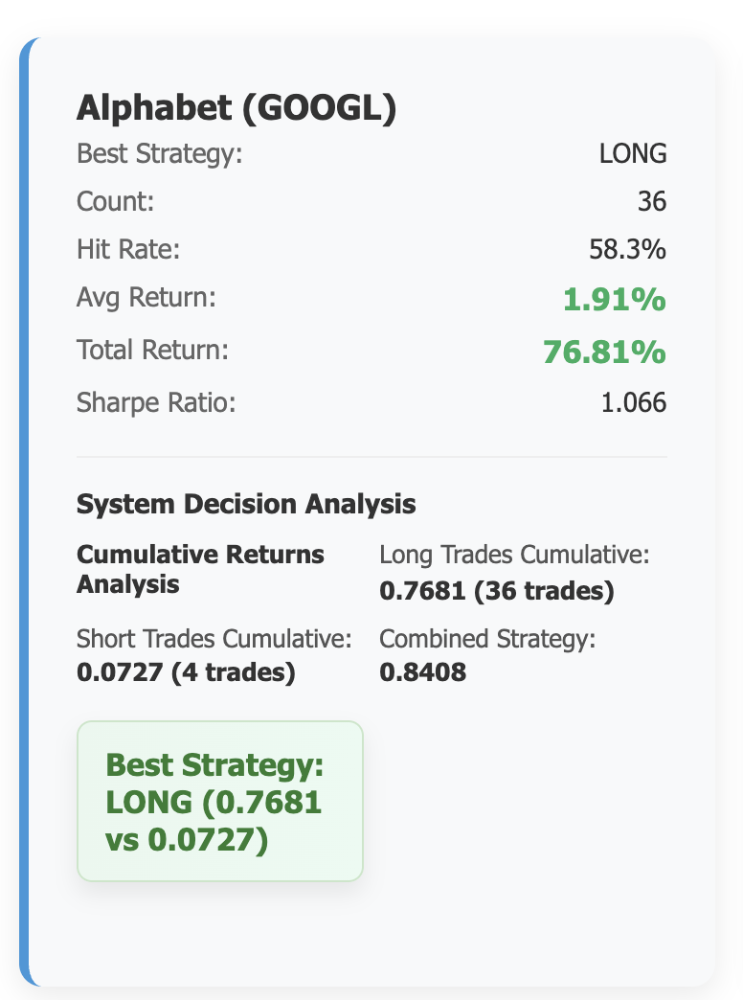

Predicting stock movements around earnings announcements for Apple, Nvidia, and Google using adaptive composite scoring and machine learning.
Background & Problem
This was an employer project in conjunction with LSE. The initial and final presentations, along with the model, were presented to the employer, an investment management firm.
Earnings announcements create high volatility and short, decisive windows for trading.
Our goal was to generate reproducible, actionable signals by combining historical price action,
earnings surprise, sentiment, and macroeconomic data.
We concentrated on three questions:
Price behavior: How do stock prices typically behave around earnings windows?
Financial drivers: What financial metrics (e.g. revenue, margins) most impact those movements?
Macro context: How do macroeconomic conditions (e.g. inflation, interest rates, and unemployment) interact with these patterns?
The objective: a robust, adaptable decision system - when specific conditions are met,
take a clear long, short, or hold action - with results that remain consistent across
changing market regimes.
Keep reading below to learn about the research and methodology behind the model.
If you're interested in the results, skip ahead to Results & Testing.
Executive summary: This project used extensive data analysis and collection along with ML to create a model that predicts stock price movements around earnings events. The end result was a model that correctly predicted stock movement direction with a hit rate of ~60% and total returns of up to 76% over all earnings events tested.
Key factors
EarningsEPS surprise and revenue dynamics at the event.
VolatilityPre-event volatility relative to historical levels.
SentimentMarket sentiment from news and social data.
MacroCPI, unemployment, and policy rate conditions.
Model Overview
Data Collection
Prices, earnings, macro, sentiment, and filings.
→
Feature Engineering
Normalised subscores for EPS, macro, volatility, sentiment, revenue.
→
Composite Score
Stock-specific weights combine subscores into a single signal metric.
→
Adaptive Thresholds
Thresholds adjust by market regime and sentiment conditions.
→
Signal Generation
Go Long, Go Short, or Hold based on threshold comparison.
→
Evaluation
Hit rate, returns, Sharpe, and signal-performance alignment.
Composite score integrates EPS, macro, volatility, sentiment, and revenue - with
weights optimised per stock via grid testing across thousands of combinations.
Model Framework
The final model originated from an initial idea around logic gates. For each stock and earnings event,
a composite score was generated based on EPS, macroeconomic indicators, volatility,
sentiment, and revenue.
Composite scores were refined by applying stock-specific weights, discovered through
grid testing thousands of variations. The example weights below are visualised.
EPS25%
Macro25%
Volatility15%
Sentiment30%
Revenue5%
Sub-scores also exist within certain factors - for instance, the Macro score is a
weighted combination of CPI, unemployment, and the Federal Funds Rate (EFFR).
The composite score is compared against dynamic thresholds for each stock, found through
extensive grid testing to determine profitability points.
In summary, when market conditions are good, we lower barriers to trade and generate more signals. In uncertain or volatile periods, thresholds rise so only high-quality trades occur.
The outcome is a decision system with three possible signals:
if the score is above the long threshold → Go Long,
if below the short threshold → Go Short,
if in between → Hold.
Data & Feature Engineering
The unified dataset combines historical prices, earnings, macroeconomic indicators, and sentiment data. Core sources include
market data, macro series, and real-time filings.
YFinance
Earnings reports, estimates, and OHLCV price history.
FRED
Macro: CPI, unemployment, and policy rate (EFFR).
Alpha Vantage
News sentiment signals combined with social sentiment.
SEC Filings
10-K/10-Q data and earnings announcement timing.
Data Sources and Methodology
To determine which variables to use for the stocks, we ran linear regression, multiple linear regression, and
decision trees. Generally, EPS percentage and EPS surprise were the best indicators of stock price movement
around earnings, along with revenue.
On the macroeconomics side, CPI, unemployment, and the effective federal funds rate (EFFR) had the greatest
impact on stocks.
As this project used only free and publicly available data, some data could not be easily obtained, such as
implied volatility and revenue surprise. As a workaround for testing purposes, proxies were used for
volatility and revenue surprise. Synthetic events were also used to expand the training set beyond the 42 real
earnings events.
Synthetic Data Generation
Bootstrap sampling: similar historical events with noise while preserving correlations.
Volatility-based: scale returns by volatility subscore with volatility-dependent noise.
Macro-regime: shift returns based on macroeconomic conditions across cycles.
Rolling window: rolling averages with time-dependent noise.
To create a volatility measure, pre‑earnings volatility is measured as the standard deviation of T−10 to T−2 returns and z-scored.
Revenue surprise is proxied from EPS surprise (≈ 0.7×).
Synthetic events are re‑scored (EPS/revenue/sentiment), normalised, and assigned adaptive thresholds.
System Summary
Machine Learning Models
The implementation is built in Python, leveraging pandas for data handling, scikit-learn for modeling, and NumPy for numerical routines. Models are trained on engineered features designed to align with the composite score, including EPS surprise (pre/post), macro subscore, pre-earnings volatility, sentiment, and a revenue proxy. To prevent data leakage, train/test splits preserve the natural time order.
We evaluate two prediction tasks:
Direction classification (up vs. down), using logistic regression, decision trees, and random forests.
Return regression over a short post-earnings window, using both linear and tree-based regressors.
Directional predictions determine the signal side (long vs. short), while regression outputs guide magnitude and priority.
Enhanced Optimisation Process
For each stock and time period, we adjust trade thresholds by exploring different base levels and long/short balances. Performance is measured with a weighted mix of hit rate and average return, with checks in place to avoid extreme settings. We use time-series cross-validation to ensure results are robust, and a cross-stock mode allows thresholds to be learned from other names.
Once a base threshold is set, we refine it at the event level using macro and sentiment signals, clipped to stock-specific ranges. For NVDA, regime and EPS factors add a small long bias to better capture its dynamics. This keeps thresholds flexible to market conditions while avoiding look-ahead bias.
Stock-Specific Optimisations
Each stock uses tailored weights and threshold ranges, with per-event macro/sentiment adjustments clipped within stock-specific bounds.
NVDA also applies small regime/EPS tweaks and a mild long bias to reflect observed post-earnings dynamics.
AAPL: Higher long multiplier (~1.2) and a moderate base threshold; revenue/EPS carry more weight. Thresholds adapt with macro and sentiment signals. Base threshold: 18%.
NVDA: Very low base threshold with a higher long tilt; enhanced sentiment and revenue features are used. Base threshold: 0.5%.
GOOGL: Higher EPS emphasis with a moderate base threshold and a smaller long multiplier; more sensitive to macro and revenue. Base threshold: 8%.
Each stock has its own Time Window Optimisation - by indentifying optimal entry/exit windows around earnings announcement (T-5 to T+5 for AAPL, T-3 to T+7 for NVDA, T-2 to T+5 for GOOGL)
through systematic testing of multiple timeframes.
Adaptive Threshold System
Thresholds are asymmetric and stock-specific. We start from a stock and window base threshold, apply a higher long multiplier for long trades,
and then clip within min and max ranges to avoid extreme settings.
The thresholds are adapted by up to ±0.05 for macroeconomics and ±0.03 for sentiment based on market conditions.
Example: if the base threshold is 0.12, a weak macro reading (macro subscore ≈ -0.4) raises it by +0.05 to 0.17, while strong positive sentiment (sentiment subscore ≈ +0.6)
lowers it by 0.03, giving an adjusted long threshold of ≈ 0.14 and short threshold of ≈ -0.14 before clipping to stock-specific bounds.
Complete System Flow
The final pipeline: load dataset → optimize thresholds → calculate composite scores → apply adaptive thresholds → generate signals →
evaluate performance. This end-to-end system produced consistent, reproducible results.
Figure: End-to-end model flow for signal generation
Figure: End-to-end model flow for signal generation
Results & Testing
To evaluate the system, we tested it against the latest three earnings events from Apple, Nvidia, and Google.
Two of these events (Apple and Nvidia) occurred after the data collection period,
meaning the model had no prior knowledge of them.
Although Google's earnings event was part of the dataset, the implementation was specifically designed
to avoid look-ahead bias, making it a strong validation case as well.
Figure: Real earnings events for Apple, Nvidia, and Google
Model Testing by Stock
What “Hit Rate” means: For a chosen window (e.g., T-5 to T+5), the system replays all real earnings events for that stock and
counts the share of trades where the signal’s direction matched the realized move. Long trades are hits when the window return is positive;
short trades are hits when the window return is negative. Events with no signal are excluded. We also report the average return across the
signaled trades for that window.
Hit Rate: 60%Average Return: 2.55%Sharpe Ratio: 1.206
When compared to the actual earnings event on 1 August 2025, the model correctly predicted a LONG trade for T-5 to T+5.
The exact returns for this T-5 to T+5 window were underestimated by 4.8%.
The image shows that out of 25 events tested, 60% returned a profit.
The cumulative return for all these events would have been 67.33%.
This return miss is possibly explained by Apple's large EPS beat - the model didn't adequately forecast how a larger beat would influence returns given the EPS weighting in the composite score.

Hit Rate: 60%Average Return: -0.78%Sharpe Ratio: -0.317
When compared to the actual earnings event on 27 August 2025, the model correctly predicted a SHORT trade for T-1 to T+1.
The model still made a loss of 0.78%. This indicates that although the model went SHORT, the test trades resulted in a LONG return.
Signals generated: 5 SHORT and 33 LONG. Both lost money, but SHORT lost slightly less.
This may indicate a training-data bias where shorts are being favoured due to historical movements. NVDA also has strong EPS and sentiment, which would signal up moves, but can exhibit a 'sell the news' pattern that leads the model to expect a down move.

Hit Rate: 58.3%Average Return: 1.91%Sharpe Ratio: 1.066
Compared to the actual earnings event on 27 August 2025, the model correctly predicted a LONG trade for T-10 to T+10.
The exact returns for this window were overestimated by 1.1%.
The image shows that out of 36 events tested, 58.3% returned a profit.
The cumulative return for all these events would have been 76.81%.
This was the closest prediction overall, possibly highlighting GOOGL's stability and maturity when using historical stock data.

Usage
Interactive Testing Interface
The system includes an interactive test script that allows users to experiment with different trading strategies
and configurations
Available Options
Stock Selection: Test individual stocks (AAPL, NVDA, GOOGL) or all stocks combined
Time Windows: Choose from T-1 to T+1 through T-10 to T+10, or specify custom windows
Dataset Options: Use real events only or include synthetic data for expanded testing
Trading Costs: Test scenarios from academic (no costs) to institutional trading
EPS Timing: Enable to use pre-earnings or post-earnings composite score
Detailed Reasoning: View detailed explanations of strategy decisions
Example Output
Found 1302 events for AAPL
Filtered to 42 real events only
Testing with 42 real events
Using pre-earnings composite score (composite_pre) for T-1 entry
Warning: Falling back to composite_pre for AAPL
Predicted return range: -0.250 to 0.250
Using standard adaptive optimization
STRATEGY RESULTS:
TRADING COSTS: None
Description: No trading costs (academic study)
Commission: 0.00%
Spread: 0.00%
Slippage: 0.00%
Total per trade: 0.00%
Total per round-trip: 0.00%
Long Trades (Combined adaptive thresholds, base=0.024, avg_adjusted=0.032):
Count: 26
Hit Rate: 0.538
Avg Return: 0.0136
Total Return: 0.3316
Std Dev: 0.0722
Sharpe Ratio: 0.826
Short Trades (Combined adaptive thresholds, base=-0.020, avg_adjusted=-0.029):
Count: 12
Hit Rate: 0.500
Avg Return: -0.0292
Total Return: -0.3261
Std Dev: 0.0785
Sharpe Ratio: -1.868 (no risk-free rate adjustment for shorts)
SHARPE RATIO INTERPRETATION:
Long Trades: Risk-adjusted return vs 4.33% risk-free rate
Short Trades: Pure risk-adjusted return (no capital invested)
Positive Sharpe = Good risk-adjusted performance
Negative Sharpe = Poor risk-adjusted performance
Higher is better: 1.0+ good, 2.0+ excellent
Neutral Trades (between thresholds):
Count: 4
Hit Rate: 0.250
Avg Return: -0.0332
All Trades (no filtering):
Count: 42
Hit Rate: 0.500
Avg Return: 0.0136
Total Return: 0.5813
Sharpe Ratio: 0.806
CUMULATIVE RETURNS ANALYSIS:
Long Trades Cumulative: 0.3316 (26 trades)
Short Trades Cumulative: -0.3261 (12 trades)
Combined Strategy: 0.0055
Best Strategy: LONG trades (0.3316 vs -0.3261)
SIGNAL vs PERFORMANCE ANALYSIS:
Long Trades: Avg=0.0136, Hit Rate=0.538, Count=26
Short Trades: Avg=-0.0292, Hit Rate=0.500, Count=12
ALIGNED: Long trades perform better, system favors LONG signals
==================================================
STRATEGY REASONING & DECISION FACTORS
==================================================
1. MACROECONOMIC ASSUMPTIONS:
- EFFR: 4.33% (current rate - 2025-06)
- Core CPI: 327.6 (latest reading - 2025-06)
- Unemployment: 4.1% (current level - 2025-06)
- Macro Regime: Contraction
- Threshold Impact: -0.010
2. ROLLING PERIOD ANALYSIS:
- Training Window: T-10 to T-2 (8 days)
- Validation Window: T+1 to T+20 (20 days)
- Lookback Period: 252 days (1 year)
- Volatility Window: T-10 to T-2
3. COMPOSITE SCORE BREAKDOWN:
- EPS Subscore: 0.42 (weight: 40.0%)
- Macro Subscore: -0.32 (weight: 15.0%)
- Vol Subscore: 0.20 (weight: 10.0%)
- Sentiment Subscore: -0.74 (weight: 30.0%)
- Revenue Subscore: -0.22 (weight: 5.0%)
- Composite Score: -0.092
4. THRESHOLD CALCULATION:
- COMBINED ADAPTIVE Thresholds: Window-based + Market conditions
- Base Long Threshold: 0.024 (optimized for T-1 to T1)
- Base Short Threshold: -0.020 (optimized for T-1 to T1)
- Average Adjusted Long: 0.032 (with market condition adjustments)
- Average Adjusted Short: -0.029 (with market condition adjustments)
- Market Adjustments: Macro (±0.05), Sentiment (±0.03) [Volatility removed per Option 1]
- Signal: SHORT
5. DECISION FACTORS:
- Entry Logic: Buy at T-1
- Exit Logic: Sell at T1
- Position Size: Full position
- Risk Management: None (academic study)
- Model Confidence: 68%
- Data Usage: All 3906 events
6. UNCERTAINTY MEASURES:
- Standard Error: ±0.045
- Confidence Interval: 0.589-0.679
- Model Stability: High
- Data Quality: Good
- Historical Coverage: 2015-2025
7. SENTIMENT ANALYSIS:
- Alpha Vantage Sentiment: -0.518
- New Sentiment Score: nan
- Combined Sentiment: -0.518
- Sentiment Coverage: 100%
Performance Metrics
The system provides detailed performance evaluation including:
Hit Rate: Percentage of profitable trades
Average Return: Mean return per trade
Sharpe Ratio: Risk-adjusted performance with 4.33% risk-free rate
Cumulative Return: Total strategy performance over all events in the dataset
Signal vs Performance Analysis: Comparative evaluation of long vs short strategies
Return Capping: Clips returns to realistic ranges (-50% to +50% daily)
Web Interface
The system includes a web interface built with Flask that provides an easy to use alternative to the command line interface. This replicates the usage an analyst might have, and provides great benefit when demonstrating the model to stakeholders.
Interface Features
Stock Selection: Choose individual stocks (AAPL, NVDA, GOOGL) or test all stocks combined
Strategy Testing: Interactive form matching the command-line interface functionality
Trading Costs selector
Data Set Selector - use real events only or include synthetic data for expanded testing
Detailed Reasoning - View full explanations of trading decisions or disable for faster results